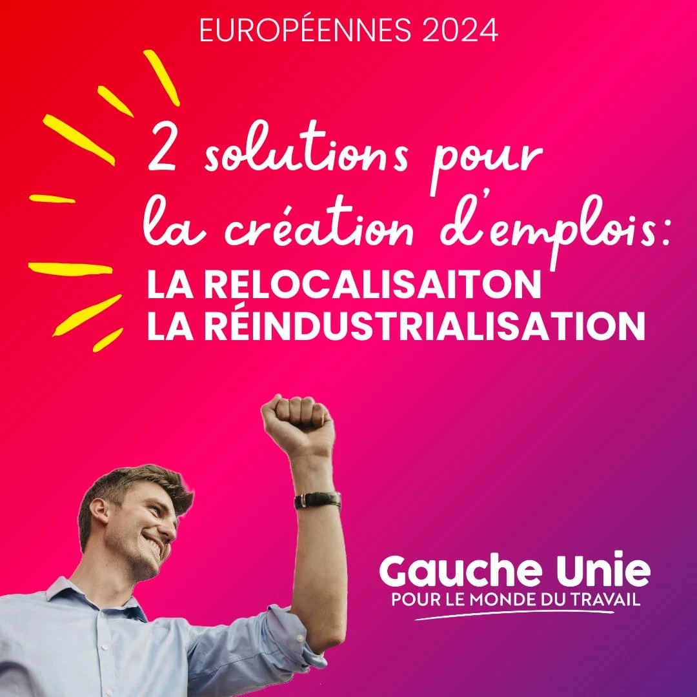
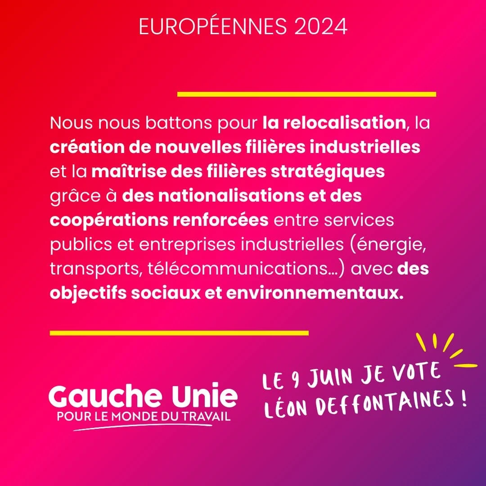

Publication d’archives
2 solutions pour la création d'emplois en France !
Date indiquée par Facebook · 12 avril 2024
Texte conservé avec la publication
2 solutions pour la création d'emplois en France !
Relocaliser et réindustrialiser ! C'est bénéfique pour l'emploi sur notre territoire mais aussi pour réduire notre empreinte carbone en réduisant de fait nos importations !
#europeennes2024
#reprenonslamain
#leondeffontaines
#GaucheUnie


Sources
Archive rouge · export Facebook · AR-0002-FB-01422
À lire aussi · Une raison de plus de voter #GaucheUnie le 9 juin aux #electionseuropeennes2024